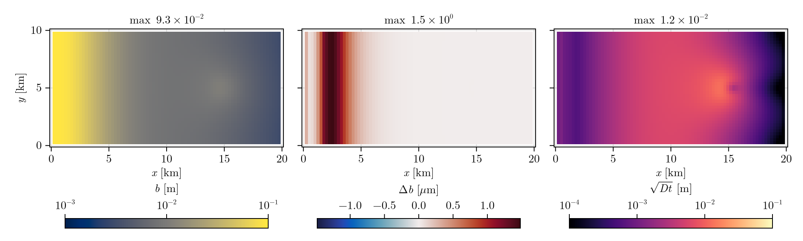

SUHMO channel-wall diffusion
SUHMO (Felden et al., 2023) adds a diffusion term ∇·(D ∇b) to the gap equation: water flowing through a channel melts its walls sideways, so channels widen instead of staying one cell wide. D follows from the flux and the head gradient, so it is large in channels and close to zero in the sheet. Pass diffusion_scheme = WithDiffusion(ls) to Simulation, where ls is a second linear solver for the gap system (CholeskyDirectSolver, CUDSSDirectSolver(grid; structure = :spd) or CGIterativeSolver).
Two linear solvers
A SUHMO run solves two linear systems, so it takes two solver objects:
- the head solve,
lsinside thePicardSolver(ps): the head equation. On the default sheet its matrix is not symmetric, so it needs an LU solver (LUDirectSolver,CUDSSDirectSolver) - the gap solve,
lsinsideWithDiffusion(ls): the diffusion ofb. Its matrix is symmetric positive definite, so the cheaper Cholesky (or CG) works
They are separate instances because each holds its own matrix and factorization, and each can use the method that suits its matrix. With ConsistentGapCoupling (the default) the gap system is solved at every Picard iteration, one extra solve per iteration.
This page runs when the docs are built: a moulin on the margin of the Tutorial, widened to 10 km, 60 days of 1-day steps with and without the diffusion.
using Shakti
using CairoMakieSetup
The tutorial's margin on an 80 x 40 grid, 0.1 m/a everywhere plus a moulin 15 km from the outlet that ramps up to 20 m³/s over 30 days. GaussianMoulinMeltInput(grid, x0, y0, sigma, Q_max, ramp) is the moulin; the uniform 0.1 m/a goes in through set_ieb_external!.
nx, ny = 80, 40
grid = Grid(nx, ny, 20000.0, 10000.0)
mask = fill(GROUNDED, nx, ny)
mask[1, :] .= LAND
mask[end, :] .= OTHER_BASIN
mask[:, [1, end]] .= OTHER_BASIN
zs = [6 * (sqrt(x + 5000.0) - sqrt(5000.0)) + 1 for x in grid.x, y in grid.y]
spy = 365 * 86400.0
sl = RegularizedCoulombSlidingLaw(0.25)
function moulin_run(diffusion)
state = State(grid)
set_initial_conditions!(state, grid, ModelParameters(), sl, mask, fill(5e-25, nx, ny), zeros(nx, ny), zs,
fill(0.01, nx, ny), fill(0.05, nx, ny), fill(1e-6, nx + 1, ny), zeros(nx, ny + 1),
zeros(nx, ny), zeros(nx + 1, ny), zeros(nx, ny + 1))
set_ieb_external!(state, fill(0.1 / spy, nx, ny))
mi = GaussianMoulinMeltInput(grid, 15000.0, 5000.0, 500.0, 20.0, 30 * 86400.0)
ps = PicardSolver(200, 1e-6, LUDirectSolver(grid), grid)
ds = diffusion ? WithDiffusion(CholeskyDirectSolver(grid)) : NoDiffusion()
sim = Simulation(grid, state, 60, floattype(86400.0), ModelParameters(), mi, sl;
ps = ps, diffusion_scheme = ds)
run!(sim)
return (converged = sim.hs.ps.converged, b = Array(state.b), D = Array(state.D_x))
end
runs = [moulin_run(false), moulin_run(true)]
[r.converged for r in runs]2-element Vector{Bool}:
1
1Results
Day 60. The gap is largest near the outlet, where the ice is thin and closes it slowly; the moulin opens it only a little around x = 15 km. The diffusion barely changes the gap: D is about the gap times the wall melt rate, so over 60 days it spreads a channel wall by sqrt(D t), at most a centimetre here against 250 m cells. The middle panel is the gap with diffusion minus the gap without.
gr = mask .== GROUNDED
land(f) = ifelse.(gr, f, NaN)
xkm, ykm = grid.x ./ 1e3, grid.y ./ 1e3
t = 60 * 86400.0
Dc = (runs[2].D[1:end-1, :] .+ runs[2].D[2:end, :]) ./ 2 # D on cell centres
db = land(runs[2].b .- runs[1].b) .* 1e6 # [µm]
dbmax = max(maximum(abs, filter(isfinite, db)), 1e-3)
sci(v) = (e = floor(Int, log10(v)); "$(round(v / 10.0^e, digits = 1)) \\times 10^{$e}")
pow10 = vs -> [L"10^{%$(round(Int, v))}" for v in vs]
km = vs -> [L"%$(round(Int, v))" for v in vs]
num = vs -> [L"%$(round(v, sigdigits = 2))" for v in vs]
panels = [(L"b\ [\mathrm{m}]", land(log10.(runs[1].b)), (-3, -1), :cividis, pow10, -3:-1, maximum(runs[1].b[gr])),
(L"\Delta b\ [\mu\mathrm{m}]", db, (-dbmax, dbmax), :balance, num, Makie.automatic, dbmax),
(L"\sqrt{D t}\ [\mathrm{m}]", land(log10.(max.(sqrt.(Dc .* t), 1e-6))), (-4, -1), :magma, pow10, -4:-1,
maximum(sqrt.(Dc[gr] .* t)))]
fig = Figure(size = (1000, 300))
for (c, (name, f, crange, cmap, fmt, ticks, mx)) in enumerate(panels)
ax = Axis(fig[1, c]; aspect = DataAspect(), title = L"\max\ %$(sci(mx))", xlabel = L"x\ [\mathrm{km}]",
ylabel = c == 1 ? L"y\ [\mathrm{km}]" : "", xtickformat = km, ytickformat = km, yticklabelsvisible = c == 1)
hm = heatmap!(ax, xkm, ykm, f; colormap = cmap, colorrange = crange, nan_color = :transparent)
Colorbar(fig[2, c], hm; label = name, vertical = false, width = Relative(0.85), ticks, tickformat = fmt)
end
colgap!(fig.layout, 12); rowgap!(fig.layout, 6)
fig
The diffusion changes the result only where sqrt(D t) approaches the cell size: wide, wet channels on fine grids.
Creep cutoff
SUHMO also limits creep closure in wide channels: ModelParameters(b_c = ...) with b_c > 0 selects CreepCutoff. On some datasets it lets a channel grow without bound, so use it with care and keep b_max = Inf: check_gap_height then stops the run when b exceeds the ice thickness by more than 1 km.